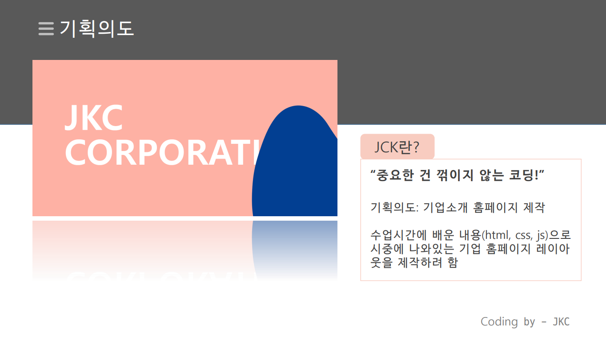

JKC_PROJECT
Tech Stack : HTML5 CSS3 JavaScript

JKC란 중요한건 꺾이지 않는 코딩 이라는 뜻으로 JKC기업 홈페이지 레이아웃을 HTML5, CSS3, JavaScript 를 이용해 간단하게 제작한 프로젝트입니다.
본 프로젝트의 팀장과 팀원을 나누는 과정에서 우리 팀은 실력으로 팀장을 선출하는 것이 아니라 서로 팀장의 역할을 한번씩 경험해 보자는 의미에서 돌아가며 팀장을 해보기로 했고 팀장의 실력이 부족할 경우 팀원들이 도와주며 프로젝트를 진행하기로 했습니다.
본 프로젝트에서 본인은 CSS효과, NoticePage 부분을 담당했고 간단한 프로젝트 였지만 기획부터 개발까지 해보면서 팀원과의 협업의 중요성에 대해 배웠고, HTML5, CSS3, JavaScript에 자신감이 생겼습니다.